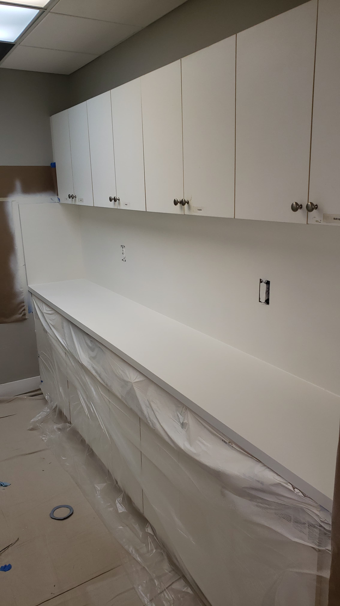

<section id="about" class="about">
    <div class="container" data-aos="fade-up">

        <div class="section-title">
            <h2>Countertops Refinishing</h2>
            <p>Countertop refinishing has emerged nowadays as one of the preferred options for homeowners and investors
              when the countertops start showing signs of aging, are damaged or look simply ugly</p>
        </div>

        <div class="row">
            <div class="col-lg-6 cf" data-aos="fade-right">
                
                
            </div>
            <div class="col-lg-6 pt-4 pt-lg-0 content text-justify " data-aos="fade-left">
                <h3 class="text-center">Countertop refinishing is normally a much wiser choice</h3>
                <p>
                  The demand for the countertop refinishing service has gone up considerably over the years, as the real
                  estate market expands, for three main reasons:
                </p>
                <ul>
                    <li><i class="bi bi-check-circle"></i> 1- Kitchens are one of those spaces in the house whose condition
                      has a direct impact on the property value and are the central gathering point in today’s family. Countertops
                      are responsible for at least 60% of this important room’s appearance.</li>
                    <li><i class="bi bi-check-circle"></i> 2- Countertops are normally used for almost anything when the resident
                      is in the kitchen: cutting meat, preparing different kinds of food, storage space, ect, hence they can suffer
                      a lot of tear and wear over the years, making them look old and worn-down.</li>
                    <li><i class="bi bi-check-circle"></i> 3- Countertop refinishing out of all the options available (laminate,
                      conventional remodeling, among others) represents the most inexpensive choice and still  with impressive and
                      astonishing results.</li>
                </ul>
                <p>
                  We have a wide array of solutions in terms of styles, colors and ideas. Countertop refinishing will always save you
                  not only a lot of time but a significant amount of money. We guarantee a result that will impress you and your guests.
                  So if you are thinking about: what is the best option of  ” countertop resurfacing near me ” you have gotten to the right
                  place.
                  You can choose from quartz finish,  faux granite finish to a solid color of your choice, so the opportunities and options
                  are infinite and limited only to your imagination
                </p>
            </div>
        </div>

    </div>
</section>
